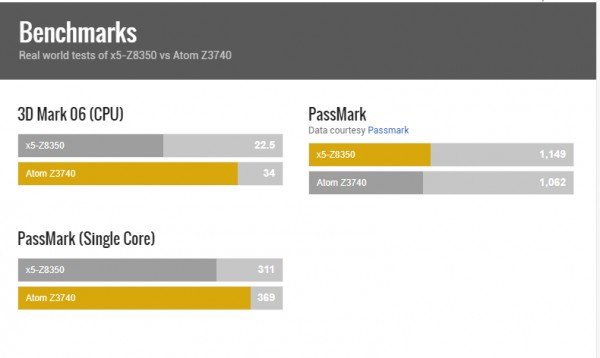

平板機購買問題
3 個回答
可以的
目前windows平板 都是支援的
目前windows平板 都是支援的
不好意思剛發問過了
因為一次要買3台 所以請版主幫我看一下 這一台能順順的跑軟體嗎
您好
都可以用 T100的CPU規格好一些 會比較順一點
T100 CPU 是 Z3740
Acer CPU 是 Z8350

硬碟空間 32G已足夠 先用軟體1GB的磁碟空間可以用上好幾年
您好
都可以用 T100的CPU規格好一些 會比較順一點
T100 CPU 是 Z3740
Acer CPU 是 Z8350

硬碟空間 32G已足夠 先用軟體1GB的磁碟空間可以用上好幾年